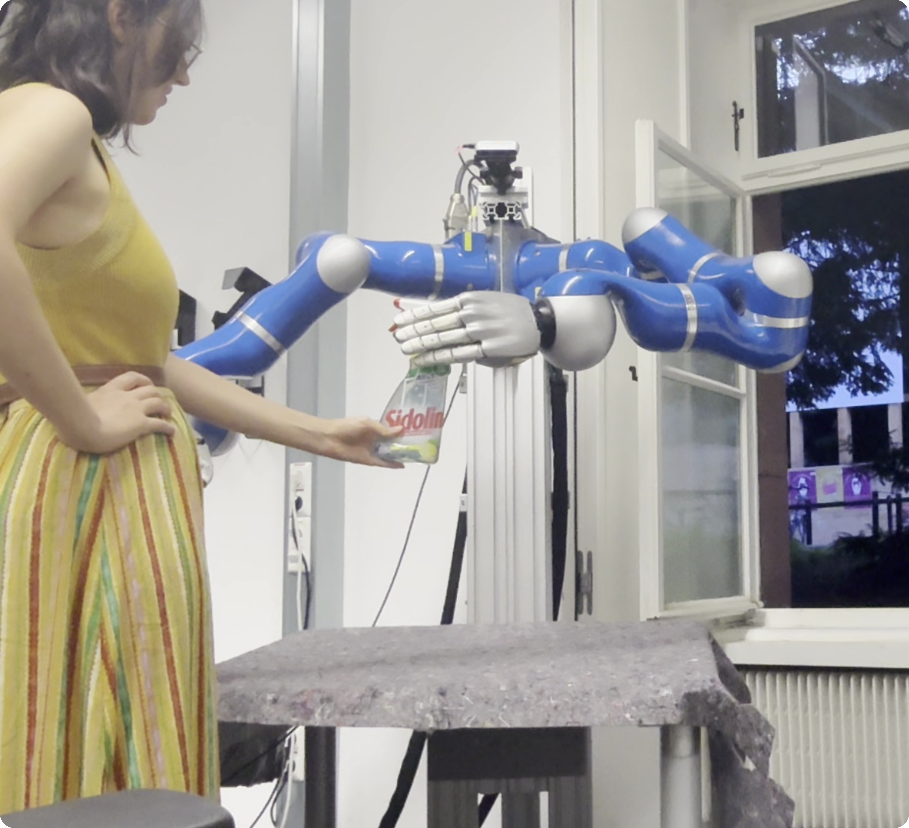
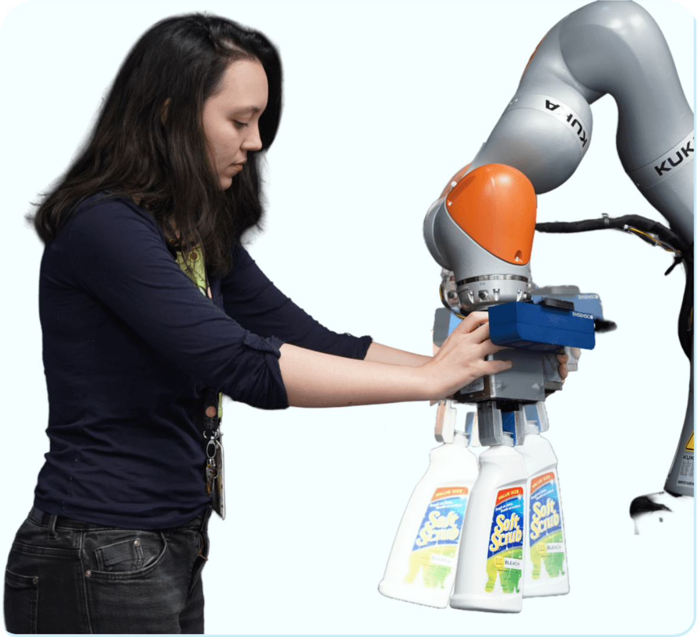
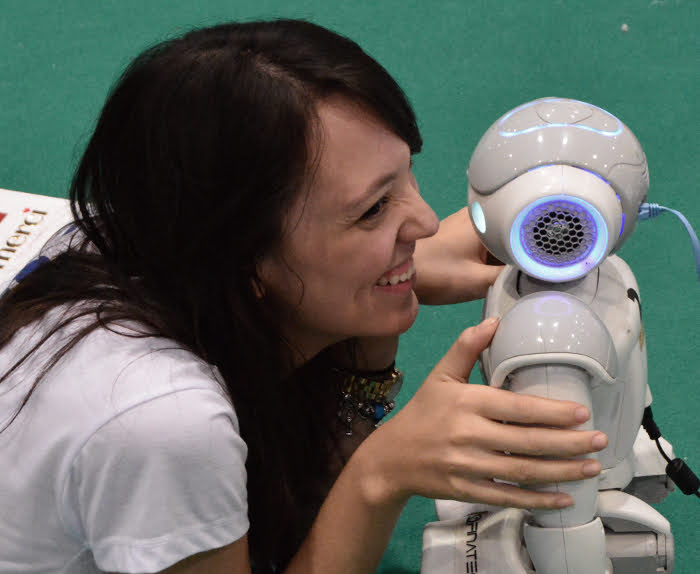

Cristiana de Farias
Intelligent Autonomous Systems (IAS) Lab | TU Darmstadt
🤖 I am a Postdoctoral Researcher at the Intelligent Autonomous Systems (IAS) Lab at TU Darmstadt, working with Prof. Jan Peters. My main research focus is on robotic dexterity and how to endow robots with human-like competence to interact with our messy and contact-rich world.
🦾 My research addresses robotic dexterity through perception and sensing for manipulation, focusing on active and uncertainty-aware approaches, together with representation learning and control. I explore how vision and touch can be tightly coupled to support efficient exploration, precise manipulation, and robust skill acquisition in complex, unstructured environments.
🎓 Before joining IAS, I completed my PhD at the University of Birmingham (Extreme Robotics Lab) and earned my MSc and BSc in Control and Automation Engineering from the University of Brasília. My background combines geometric and physical modeling with modern robot learning, grounding dexterous behavior in strong physical understanding.



Latest News
Active Perception for Manipulation Workshop We are organising the Act to Sense to Act Better workshop at ICRA 2026!.
Recent Publication: Our paper APPLE: Toward General Active Perception Via Reinforcement Learning has been accepted for publication at ICLR 2026!
ICRA News Three papers accepted in ICRA this year! Looking forward to Vienna.
Get In Touch
🚀 I am always looking for motivated people interested in robotic dexterity and active perception. Feel free to reach out via email if you want to collaborate!